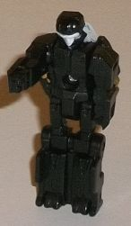
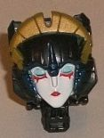
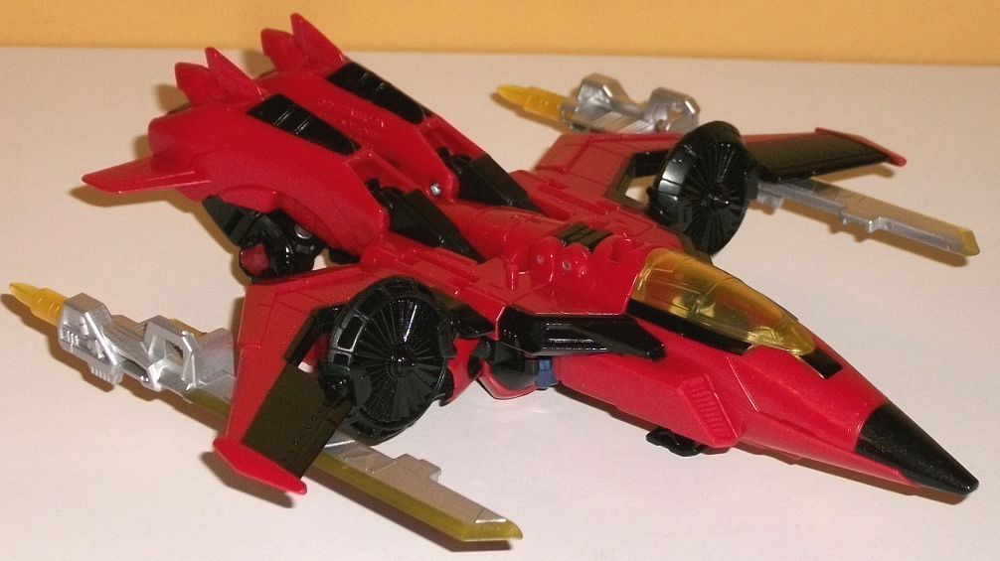
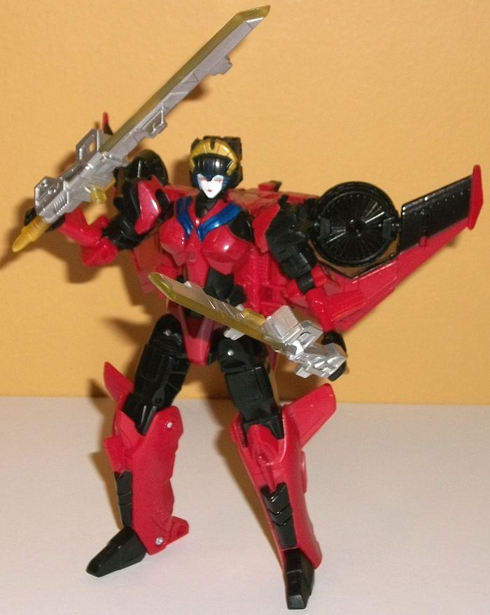

Allegiances
: Autobot
Size
: Deluxe
Difficulty of Transformation
: Very
Easy
Color Scheme
: Black, moderately
dark red, and some silver, translucent lemon yellow, dark glossy blue,
dull metallic gold, light pale sky blue, and white
Rating
: 7.4


Scorchfire is Windblade's
Titan Master, and in robot mode... she?... has mostly nonscript detailing,
for the most part. The main body has two details for the chest with little
vents, a couple of minor details on the hips and lower legs that are otherwise
pretty boxy, and pretty average-looking arms with fists that are molded
onto the inside. The head is the most unique aspect of Scorchfire, as she
has a roundish head, a long visor, a small mouth and chin, and small helmet
details to the sides of said mouth and face. The visor and face are painted
white, which looks a bit odd as there's no other paint on Scorchfire's
robot mode-- she's all black otherwise. I think actually putting on some
red or blue paint on the visor and differentiating it from, say, a silver
face would've worked wonders. As with all Titan Masters, in robot mode
Scorchfire can move at the head and back-and-forth at the shoulders, as
well as at the hips and knees (both of the latter as one-- the legs are
connected together). In head mode, the facesculpt for Windblade is excellent--
certainly far better than the
"Thrilling 30th"
headsculpt, at any rate. She's got a fairly blank, innocent look on her
face, with the red makeup below her light blue eyes, red lips, a white
face, and the mold details on her forehead that are similar to her head
ornament. The head ornamentation's a bit smaller on this version due to
the Titan Master proportion limitations, but it all still looks pretty
good and is well-sculpted and proportioned. The dull gold paint on her
ornament looks very nice, and there's some dark blue paint around her face
and on a bit of her forehead. The dark blue could stand to be a bit lighter,
however, as against the black it's so dark it doesn't contrast very well.
From a side view the head looks a bit off, too, as given Windblade's head
proportions having a big black block behind her face doesn't look too hot.


Windblade's jet alternate
mode has been changed a little bit, at least compared to the original "Thrilling
30th" version. For one, the colors are basically flipped; the original
had a mostly black color scheme with red being a secondary color, whereas
with this version nearly all of the plastic is red with black still being
a major color, but used a bit less. This fits in with Windblade's more
recent incarnations such as in
Robots in Disguise
(2015)
, and I do think it looks a bit better and more fits an Autobot,
so I like the change. Unfortunately, those are her only two major colors
in this mode; they are broken up enough where there isn't one single huge
area of just one color--with several black paint apps on the nosecone,
wings, and a bit on the rear end--but that's still it. There's some translucent
lemony yellow on her cockpit and her weapons, and some silver on said weapons,
but even as far as accent colors that's it. In general this version of
Windblade is more futuristic-looking, with very angular, V-shaped wings
(yes, the VTOL fans can rotate in place), a longer nosecone, and a fairly...
unrealistic back end. I mean, it's VERY obvious the tail end of this mode
is just Windblade's robot legs folded up-- they don't even connect to each
other in the middle to form one solid tail end. There's little fins coming
off the back end, but those don't really help much. There's also some pretty
obvious other robot bits, such as the upper legs coming down from the back
end as well as the arms just hanging there below the wings. To be fair,
they do peg into the underside of the wings, so they stay in place, but
they don't fit in with the surrounding parts at all, with the lower arms
particularly obvious as they stick out even BEHIND the wings. Her chest
sticks out a little too on the bottom but it's not by much, so that's pretty
minor in comparison. (She does have a fold-down landing gear, and combined
with the small fins on her lower arms near the back end, they do a pretty
good job of keeping her level in this mode.) The nosecone's cockpit can
fold open, predictably, so you can put Scorchfire or another Titan Master
in there. As far as mold detailing goes, on her jet mode she has mostly
angular panel detailing, with several tiny litlte "bolts" even molded into
the wings. There's also some vents on the sides of the nosecone, and some
curved details on the back end that makes that area stick out even more
than it already would have. It's pretty decent, although not as intricate
as most other Titans Return figures. For weapons, Windblade has two sword-halves
that peg underneath her wings in this mode, and actually look kinda cool
like that-- she can do some damage slicing people up even in the air! Like
with many Titans Return figures, when you combine the sword-halves there's
a spot for a Titan Master to sit in-- though honestly I wish they had forgone
that on Windblade, as they kinda ruin the otherwise sharp, lean look of
the swords.
Windblade's transformation
is incredibly basic for a Generations deluxe-- basically you fold out the
legs and then slide them up into the body some, fold back the nosecone
(and the wings a little), and then slide up the arms slightly and plug
in the head. That's it. Some fans make a big deal about saying she's a
remold of
Titans Return Scourge
because they
share the upper legs and that slider piece below the waist, but those are
the ONLY parts reused-- everything else is brand new. Windblade's a new
mold, people, she just re-uses a few parts for cost's sake. That said,
because her upper legs are borrowed from Scourge but the lower legs are
made to be a bit more thin and delicate, her upper legs look rather bulky,
like she's got "thunder thighs". It looks kinda off, especially since the
details on the upper legs are so basic but the details on the rest of her
robot mode-specific pieces are very well done-- she's got some excellent
curved armor plating on her waist, abs, and chest, complete with a metallic
dark blue collar below her head. Her arms also have some very well-done
multi-layered detailing on the shoulders and upper arms, though her lower
arms are very skinny and delicate in comparison-- I'm kinda surprised those
tiny hands can actually hold her swords, to be honest. Windblade has some
pretty big extras behind her back, what with the wings and nosecone all
hanging back there, but her feet are long enough to keep her fairly stable,
and traditionally her wings are pretty obvious in her robot mode, so I
can't get too perturbed about that. I wish her nosecone folded up more,
though. For articulation, Windblade can move at the neck, shoulders, elbows
(at two points), hips (at three points), knees, and down a bit at the toes.
Thus she's not super-articulated, but she's got enough to get the job done,
though her backback and fairly delicate lower legs can limit her poses
a bit more than you'd think.
For those who want a
Windblade toy that is both more "Generations-esque" than the Robots in
Disguise (2015) toy, but a simpler toy with generally better proportions
than her "Thrilling 30th" version, this is your 'bot. That said, the original
definitely had a better vehicle mode, and the amount of kibble in both
of her modes and a thoroughly uninspired transformation makes her a below-average
deluxe for the line overall.
Review by Beastbot